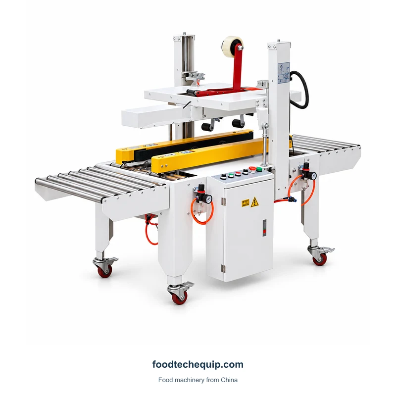

Vật liệu vào thùng chứa
Thực phẩm lỏng
So sánh cấu hình theo độ nhớt, nhiệt độ, hạt lẫn trong sản phẩm và kích thước miệng vật chứa.
Khám phá thiết bị đổ đầy ↗Khám phá các chi tiết vật liệu, đóng gói và xử lý tạo hình một yêu cầu thiết bị. Bắt đầu với nhiệm vụ, sau đó so sánh các bản vẽ liên quan.
So sánh cấu hình theo độ nhớt, nhiệt độ, hạt lẫn trong sản phẩm và kích thước miệng vật chứa.
Khám phá thiết bị đổ đầy ↗
Định dạng túi, vật liệu màng và tình trạng của sản phẩm của bạn giúp xác định các yêu cầu về bao bì. Thảo luận về cấu hình sẵn có cho gói bạn muốn.
Xem các phương án đóng gói túi nhỏ ↗
Chuẩn bị chai và nắp tương thích. So sánh đóng nắp cơ học với dán màng nhôm cảm ứng theo vật chứa và trình tự thao tác.
Xem thêm: Tìm hiểu nắp chai
Nêu lượng mục tiêu và khả năng chảy của nguyên liệu. Mô tả cách phần đã định lượng đi vào túi hoặc vật chứa và công đoạn đóng kín tiếp theo.
Xem thêm: Điện tử
Kiểm tra không gian thao tác với túi đã nạp và khay nếu có. Cho biết cách đưa bao bì vào, đỡ bao bì và lấy ra.
Xem thêm: Hộp rỗng
Nêu kích thước thùng đầy, vị trí dán băng keo và thứ tự thay đổi kích cỡ. Mô tả riêng từng công đoạn đóng đai và in mã nếu cần.
Xem thêm: Hộp đựng carton
Định nghĩa mục tiêu lô hàng, điều kiện vật liệu và các bước nạp và rút trước khi chọn một máy trộn bình trộn ngang CH.
Xem thêm:
So sánh máy dạng buồng, dây chuyền hàn với đường hầm co màng và màng co dạng ống cho sản phẩm đơn hoặc kiện hàng có đế đỡ.
Xem thêm: Thử nghiệm
So sánh máy để bàn, dạng xoay, dạng cố định và dạng trong dây chuyền theo thân lon, nắp lon, cách cấp và lấy lon ra.
Xem công đoạn ghép mí lon ↗
Mô tả riêng yêu cầu nạp liệu và hàn đuôi ống. So sánh thiết bị theo vật liệu, kích thước ống và yêu cầu đối với đường hàn hoàn thiện.
Xem thêm: Hình ảnh và video về sông Hồng
Xác định túi làm từ vật liệu dệt, không dệt hay có phủ và đánh dấu vị trí mối hàn trước khi chọn máy hàn siêu âm.
Xem thêm: Ultrasonography
Chuẩn bị lọ thủy tinh, nắp tương thích và mô tả trạng thái sản phẩm khi đóng nắp để so sánh cấu hình máy.
Xem thêm: Hình ảnh sông Hồng
So sánh định lượng bằng cốc thể tích với máy cân định lượng riêng. Cho biết cần tạo túi từ màng cuộn hay nạp vào túi có sẵn.
Xem các phương án đóng gói túi nhỏ ↗
Nêu lượng mỗi túi, loại màng, mép hàn và đường bao trước khi chọn máy đóng gói túi định hình.
Xem các phương án đóng gói túi nhỏ ↗
Lập phương án đường đi của kiện hàng, vị trí đai PP, thao tác của người vận hành với máy đóng đai dạng khung hoặc nối đai bên hông.
Xem thêm:
Lập phương án cấp chai, thao tác của người vận hành và hướng lấy vật chứa đã chiết rót cho máy nhỏ gọn hoặc máy có băng tải.
Khám phá thiết bị đổ đầy ↗
So sánh cách đóng gói nén theo kích thước bó quần áo trước khi nén, màng sử dụng và yêu cầu mở lại bao bì.
Xem thêm: Hộp rỗngCho thấy tình trạng của vật liệu, gói hoàn thành và cách nó sẽ được xử lý. Cần phải bao gồm các kết quả cần thiết với kích thước gói mong muốn và trình tự tải và thu thập.
Chuẩn bị một cuộc khảo sát về thiết bị ↗Hãy cung cấp loại sản phẩm, cách đóng gói và năng suất cần đạt.